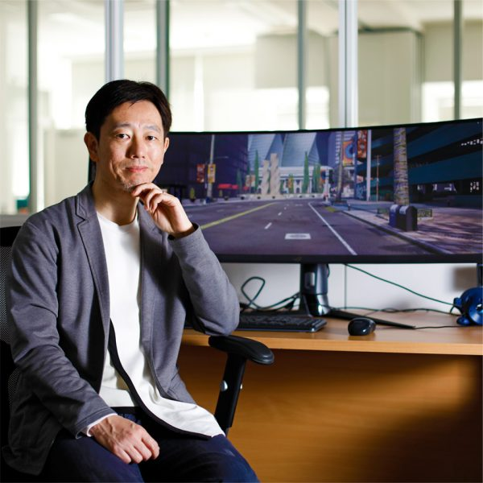

Learning analytics
Analyzing learning logs and student reflections to understand learning progress, predict performance, and support learners early.
Learning analytics · Educational data mining
Explore papers CHUBU UNIVERSITY / MPRG
山下 隆義
Professor, Department of Computer Science
College of Engineering, Chubu University
I study computer vision and machine learning at MPRG, Chubu University. From autonomous driving to single-cell biology, my research connects learning algorithms with the challenges of the real world.

KASUGAI, AICHI, JAPAN
01 RESEARCH
From visual recognition to learning systems.
Connecting fundamental research with real-world problems.
Analyzing learning logs and student reflections to understand learning progress, predict performance, and support learners early.
Road-scene perception, risk assessment, and 3D reconstruction for safer autonomous systems and realistic simulation.
Model compression and continual learning: using limited computing resources effectively and learning from changing data.
Robot grasping and 6D pose estimation, plus deep reinforcement learning for acquiring actions and visualizing the basis of decisions.
Learning from single-cell gene expression. Mouse-Geneformer supports cell-type classification, in silico perturbation analysis, and cross-species research.
02 SELECTED PUBLICATIONS
Best Industry Related Paper Award
Adapting object detectors to new domains and unseen classes using scene generation from a small set of target images.
Reconstructs photometrically consistent urban scenes from driving images with varying exposure and illumination, supporting realistic autonomous-driving simulation.
Adaptively samples integrated gradients using gradient and spatial changes to produce clearer object-specific explanations with fewer samples.
Combines road images and a traffic ontology to identify infrastructure risks and generate improvement proposals with visualizations of the improved road environment.
Learns from 21 million mouse single-cell transcriptomes to support cell-type classification and in silico perturbation analysis, with an investigation of cross-species transfer to human data.
IEEE Intelligent Vehicles Symposium (IV)
Uses deformable agent queries and bi-level routing to focus attention on informative image regions, providing a general-purpose backbone for classification, detection, and segmentation.
Combines faster self-supervised learning with diverse replay-buffer selection to improve continual representation learning from changing, unlabeled data streams.
Extending layer-wise relevance propagation to ResNet with relevance splitting that preserves the conservation property of explanations.
ICCV Workshop on Resource Efficient Deep Learning for Computer Vision
Evaluates pretrained weights without additional training and prunes the model in a single step before fine-tuning, aiming to retain accuracy while reducing model size.
Adds an attention branch that generates visual explanations and uses the resulting attention maps to improve image recognition within a jointly trained network.
Educational Data Mining (EDM)
Unsupervised detection of anomalous learning behaviors that takes the context of learning logs into account.
A graph-based framework that estimates how well learners monitor their own knowledge and supports adaptive feedback.
Comparing single-agent and multi-agent LLM strategies for automatically assessing student reflections.
IEEE/RSJ International Conference on Intelligent Robots and Systems (IROS)
Iteratively refining 6D object pose from coarse to fine by back-propagating through an image-generation network.
IEICE Transactions on Information and Systems, E105-D(9), pp. 1600–1609
Detecting suction grasp positions for symmetric objects with shallow networks trained on synthetic data.
Visualizing the basis of deep reinforcement learning decisions and giving visual feedback on robot actions through augmented reality.
No papers in this field.
03 PROFILE
From industry
to academia.
My work spans computer vision and machine learning, with applications in autonomous driving and life sciences. I joined Chubu University in 2014 after working at OMRON and became a professor in 2021.
Department of Computer Science
Department of Computer Science
MPRG launched in the same year
Chubu University
Research and development in computer vision
Master’s program
Award-winning paper
Few-shot Adaptive Open-set Object Detection with Personalized Scene Generation ↗
IEICE Best Paper Award
MIRU Nagao Award
MIRU Frontier Award
IEICE ISS Best Paper & PRMU Research Encouragement Awards
SSII Takagi Award
04 EDUCATION & ACTIVITIES
Making AI research accessible to students, engineers, and society.
EDUCATION
I teach image processing, computer vision, and artificial intelligence. Through lectures, tutorials, and writing, I help students and practitioners understand and apply deep learning.
Teaching at MPRG ↗COMMUNITY
Board Director of the Japan Deep Learning Association (JDLA) since July 2025. I contribute to AI education and the connection between research and practice.
Board appointment ↗05 GET IN TOUCH
For research collaboration, graduate study, or speaking invitations, please contact me by email.
Chubu UniversityDepartment of Computer Science
Machine Perception and Robotics Group
1200 Matsumoto-cho, Kasugai, Aichi
487-0027, Japan
Tel. +81-568-51-9670 (ext. 4410)